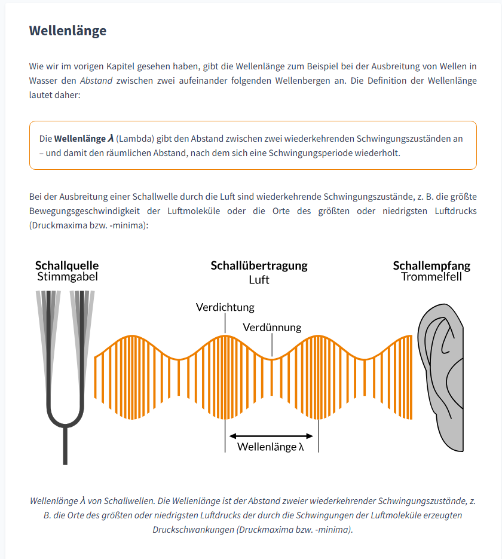
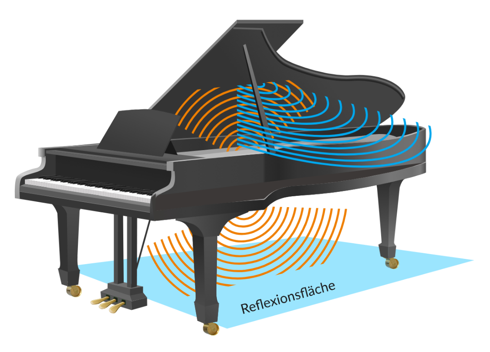
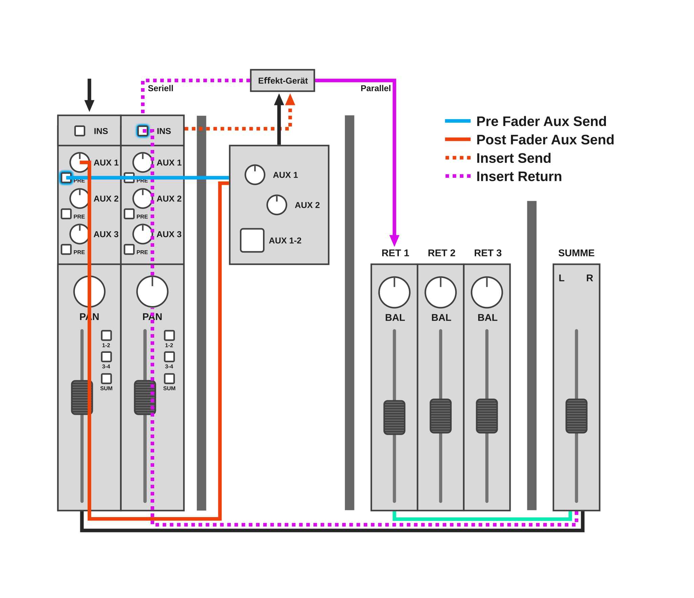
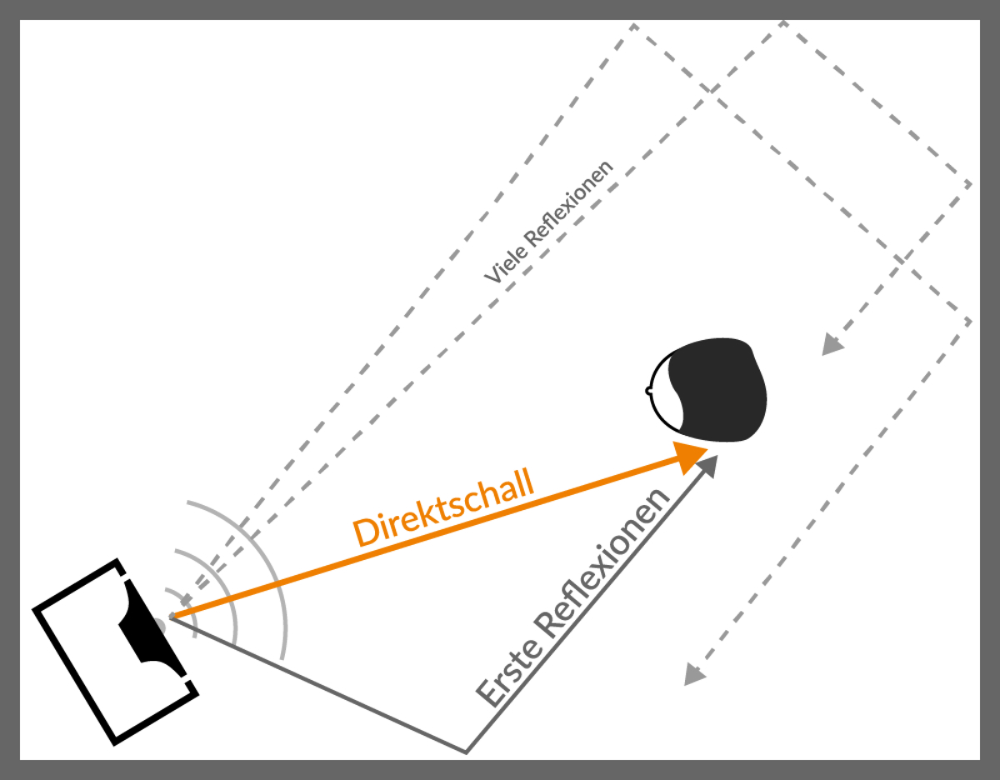
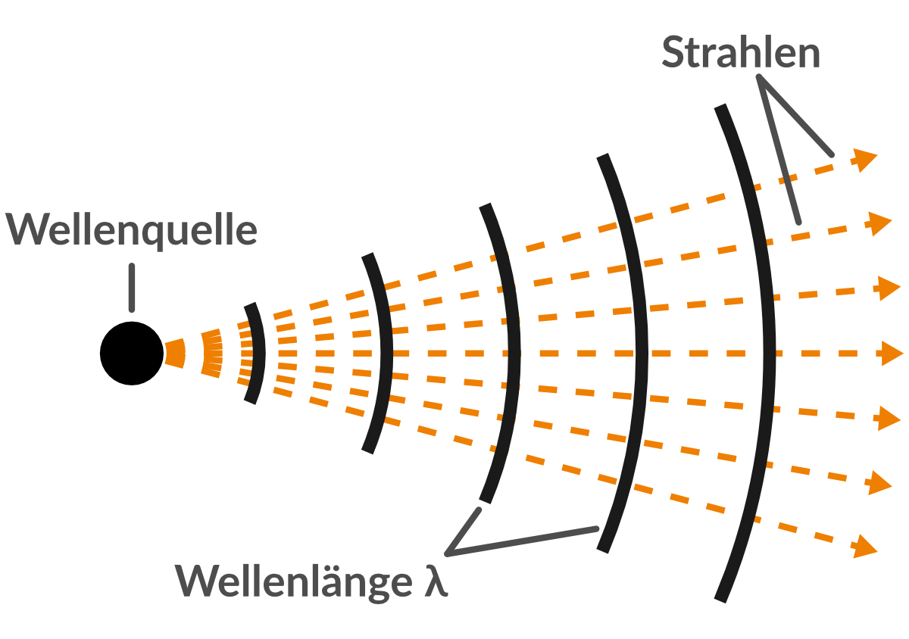
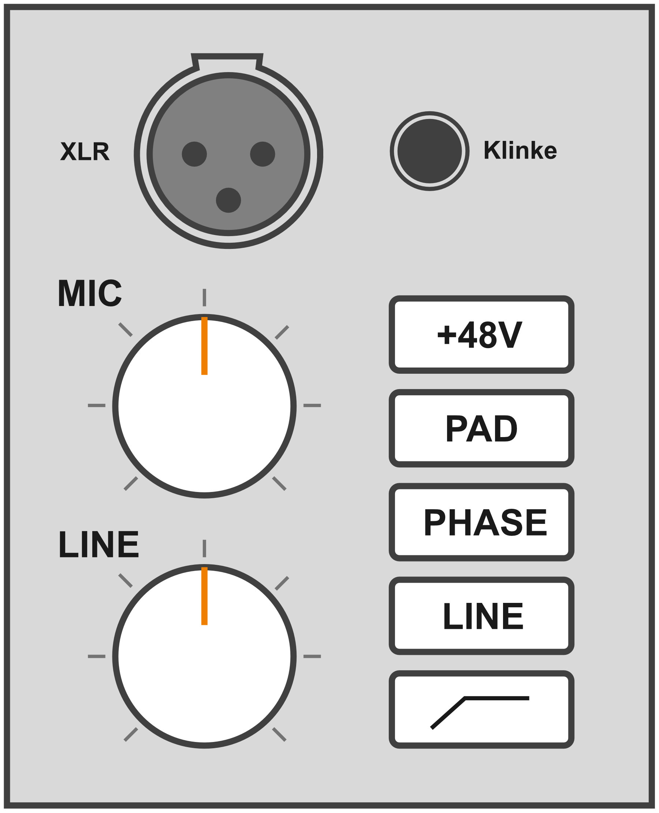
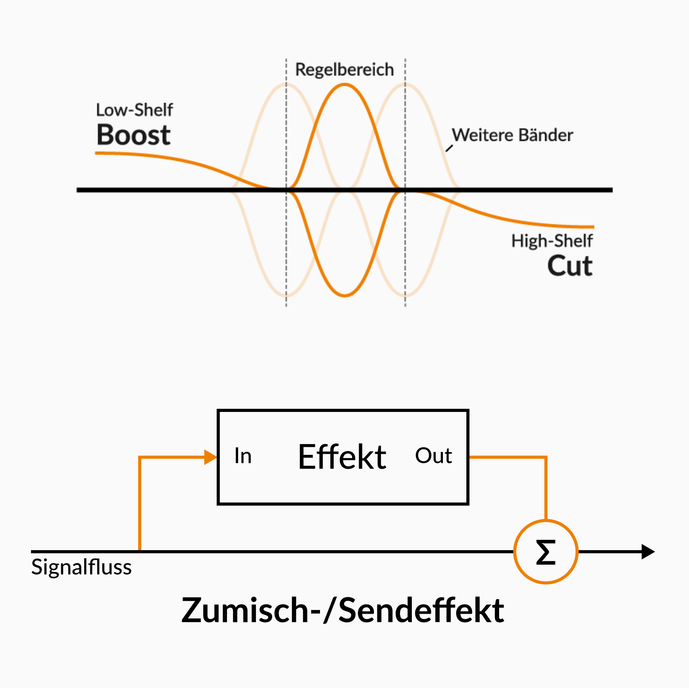
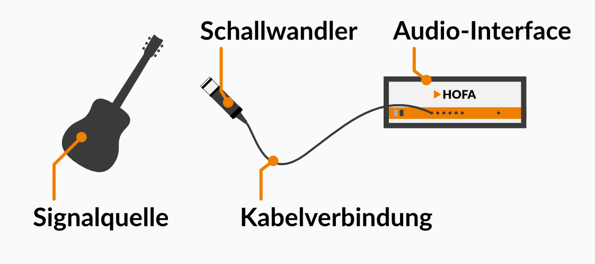
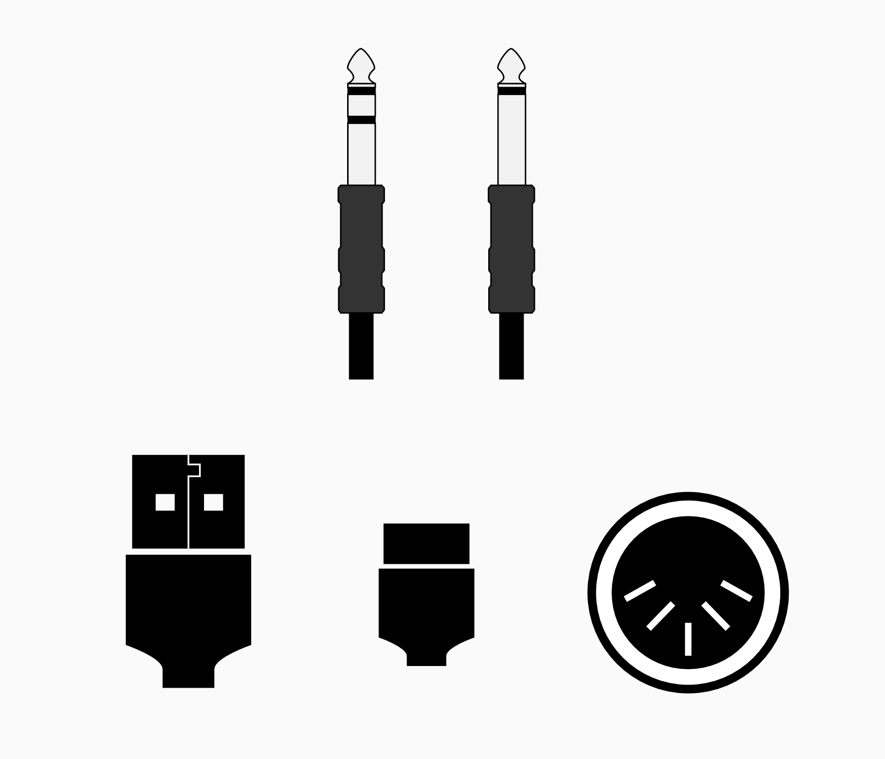

Grafiken
E-Learning
Didaktische Visualisierungen zur Unterstützung des Lernprozesses. Komplexe Sachverhalte aus der Akustik und Instrumentenkunde werden leicht verständlich aufbereitet.
Infografiken • Akustik








